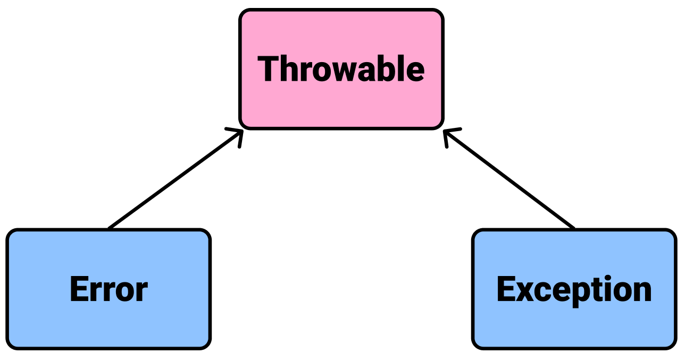

[Kotlin] 예외 처리(Exception Handling)
Throwable
코틀린은 오류가 발생하면 Error나 Exception을 발생시킵니다. Error와 Exception은 모두 Throwable클래스를 상속받습니다.

Error
Error는 코드에서 잡아낼 수 없으며 어플리케이션 자체가 다운됩니다. 대표적으로 OutOfMemoryError, StackOveflowError가 있습니다.
Exception
Exception은 try-catch구문으로 잡아낼 수 있으며, 프로그램이 다운되지 않도록 처리할 수 있습니다. 대표적으로 값이 null인 변수에 접근할 때 발생하는 NullPointException이 있습니다.
1 | var person: Person? = null |
함수에서 try-catch구문을 바로 반환할 수도 있습니다.
1 | fun getSomething(): String { |
개발자가 직접 Exception을 정의할 수 있습니다.
1 | class CustomException constructor(message: String): Exception(message) { |
개발자가 직접 Exception을 발생시킬 수도 있습니다. 이 때는 키워드 throw를 사용합니다.
1 | try { |
Exception을 발생시킬 수 있는 메소드에는 @Throws 어노테이션을 붙여 에러 가능성을 표기할 수 있습니다.
1 |
|
@Throws어노테이션이 붙은 메소드는 try-catch문 내에서 호출하는 걸 권장합니다.
1 | try { |